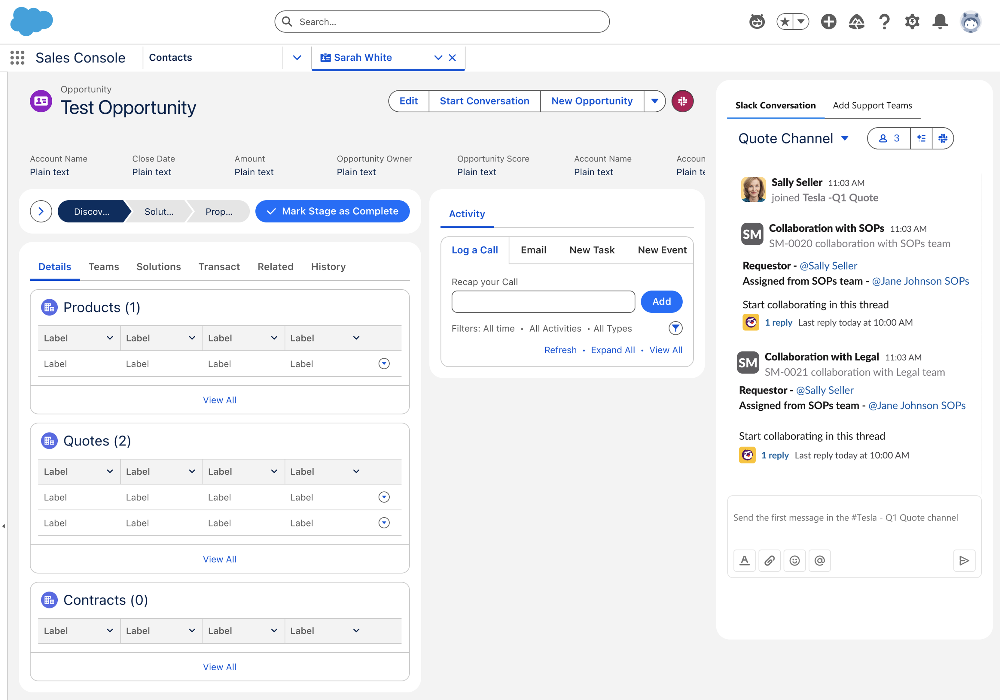
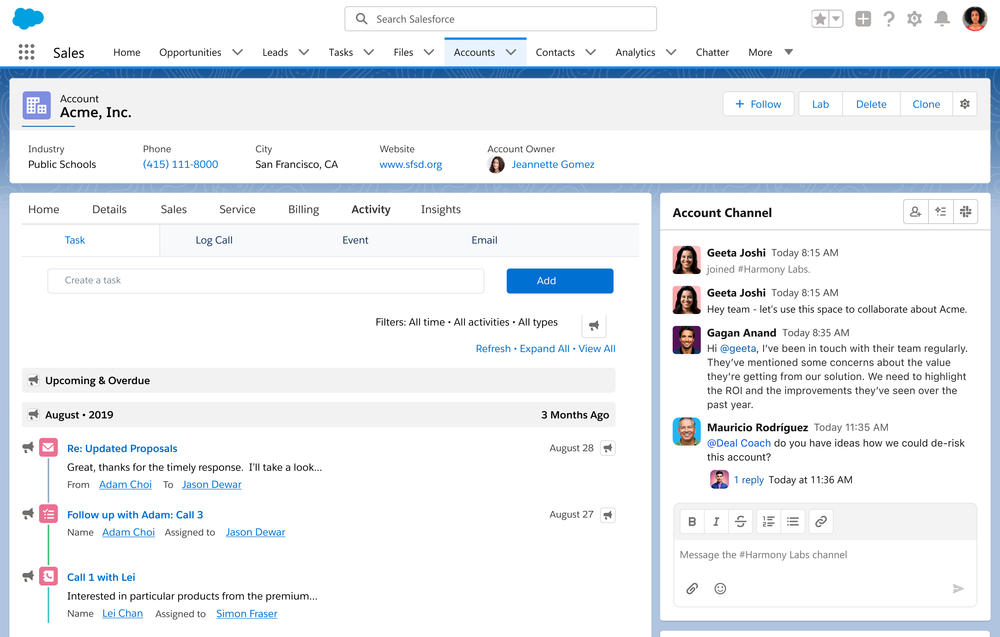
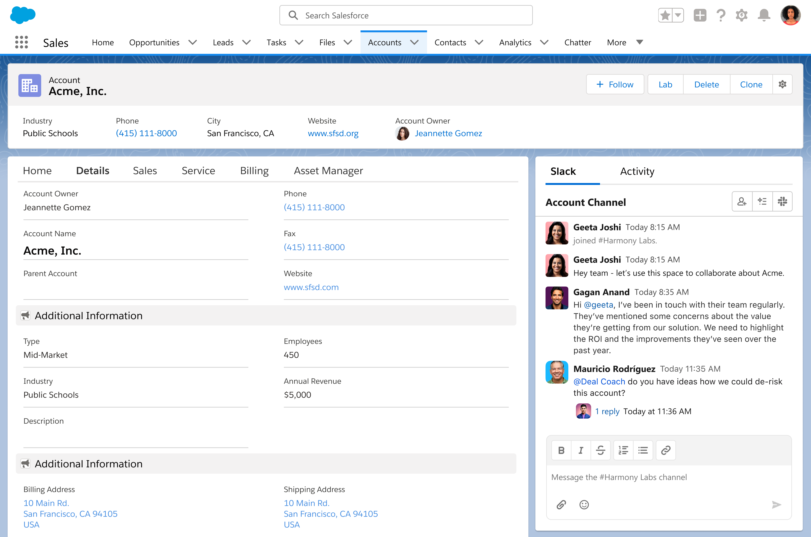
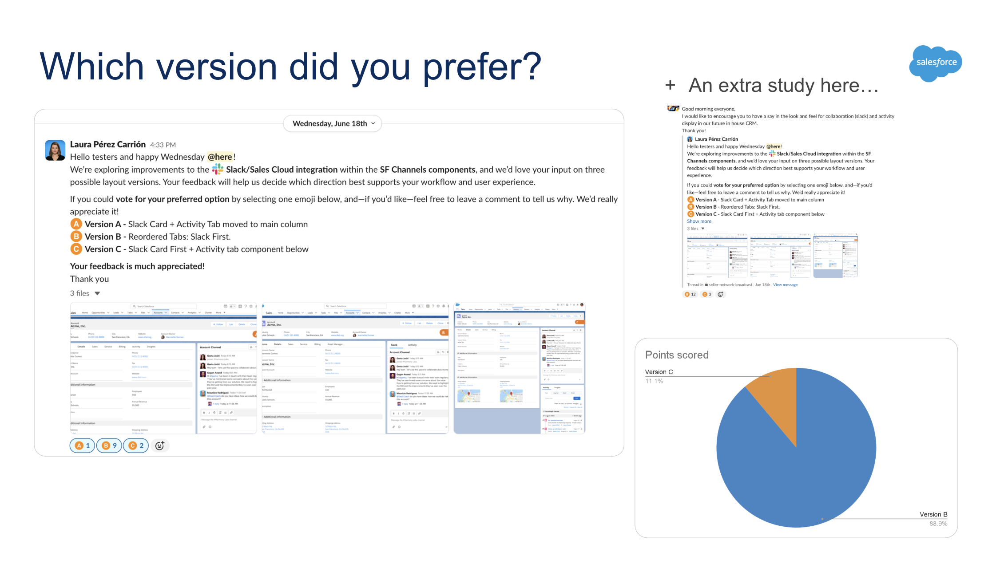

Bringing Slackinside Salesforce Llevar Slackdentro de Salesforce
The sales team was managing a conversation in Slack and a negotiation in Salesforce, suffering the consequences of having to switch between both platforms all day. I conducted research that determined the root cause of the frustration, why the Slack component wasn't being used, and subsequently designed several solutions. Through A/B testing, I obtained clear answers and provided honest, data-driven recommendations. Los Account Executives y VPs tenían por un lado conversaciones en Slack y a su vez los datos de las negociaciones en Salesforce, sufriendo las consecuencias de tener que alternar entre ambas plataformas a lo largo del día. Investigué la causa principal de esta frustración, por qué no se utilizaba el componente de Slack actual y luego diseñé varias soluciones. Mediante pruebas A/B, obtuve respuestas claras y proporcioné recomendaciones honestas basadas en datos que compartí con los líderes.
My roleMi rol
Research lead & product designerLead de research y product designer
ParticipantsParticipantes
AEs and VPsAEs y VPs
MethodsMétodos
Interviews · A/B · Usability · AI toolsEntrevistas · A/B · Usabilidad
StatusEstado
Validated proposalPropuesta validada

The problemEl problema
Two platforms, one dealDos plataformas, una misma oportunidad
Slack and Salesforce belong to the same company, but they weren't aligned, which was causing problems for salespeople in their daily work. The opportunity record was located within the organization, but decisions about that opportunity were being discussed in a Slack channel. Slack y Salesforce pertenecen al mismo grupo pero no se estaban alineando y por tanto estaba causando problemas a los vendedores en su día a día. El registro de la oportunidad vivía en la Org, sin embargo, las decisiones sobre esa oportunidad se discutían en un canal de Slack.
The main objective of the brief I received was "how to integrate Slack so that Sales Executives can use the component in Sales Cloud," but it wasn't a quick question to answer. First of all, there was a lot of misinformation, with many teams working separately, unaware that other teams were studying the same case. My work enabled them all to align and arrive at a single, consistent answer. I obtained these answers after numerous conversations with Sales Executives, launching internal surveys through Slack, and connecting with the developers handling the case. This way, I ensured that the answers were a real solution and not just another proposal among all the others already mentioned. El objetivo principal del brief que recibí era «cómo integrar Slack para que los AEs utilicen el componente en Sales Cloud» pero no era una pregunta rápida de responder ya que primero de todo había mucha desinformación, muchos equipos trabajando por separado sin conocimiento de que otros equipos estudiaban el mismo caso. Mi trabajó permitió a todos ellos alinearse y obtener una misma respuesta para todos. Esta respuestas las obtuve tras numerosas conversaciones con los AEs, lanzar encuestas internas a través de Slack y a su vez conectar con los desarrolladores que llevaban el caso. De esta manera me aseguraba de que las respuestas eran una solución real y no una propuesta más entre todas las ya mencionadas.
"When I'm working an Opportunity, switching to Slack and hunting through thousands of channels is incredibly tedious. Making the Slack component clearly visible right on the Opp record would save us a ton of time.""Cuando trabajo en una oportunidad, cambiar a Slack y buscar entre miles de canales es increíblemente tedioso. Hacer que el componente de Slack sea claramente visible directamente en el registro de la oportunidad nos ahorraría muchísimo tiempo."
— recurring theme across the AE and VP interviews— tema recurrente en las entrevistas con AEs y VPs
ProcessProceso
Four steps, in this orderCuatro pasos, en este orden
01
Interviews with AEs and VPsEntrevistas con AEs y VPs
I convened sales teams and their leadership separately: the AEs to hear the friction in their own words, and the VPs to understand what visibility they were lacking. Both groups identified the same problem from opposite ends of the spectrum: some were wasting time, others were losing signal. I conducted interviews, stakeholder workshops, and usability testing to find the final solution. I leveraged AI to reduce the wait time for results by 30%. I had lengthy discussions to gather all the information from the various Business Relationship Reports (BRRs) I received, and Gemini participated in the interviews, noting all the important points that emerged during the meetings and that couldn't be overlooked.Convoqué a vendedores y a su liderazgo por separado: a los AEs para escuchar la fricción en sus propias palabras, a los VPs para entender qué visibilidad les faltaba. Los dos grupos nombraron el mismo problema desde extremos opuestos: unos pierden tiempo, otros pierden señal. Realicé entrevistas, workshops con stakeholders y usability testing para hallar la solución final. Me apoyé en la IA para conseguir reducir un 30% del tiempo de espera para los resultados. Tuve largas conversaciones para recopilar toda la información de los diferentes BRDs que recibí y Gemini participó en las entrevistas anotando todos los puntos importantes que salieron durante los meetings y que no podían olviderse.
02
Feature prioritisationPriorización de features
The synthesis became a list of the elements that the integration should include to be worthwhile and, equally important, those that it should not absorb. Not all Slack features improve with integration.La síntesis se convirtió en una lista de los elementos que la integración debía incluir para ser útil y, de igual importancia, de aquellos que no debía absorber. No todas las funciones de Slack mejoran con la integración.
03
A/B testing the designsA/B testing de los diseños
Two design paths were created and presented to users instead of being discussed: one keeps Slack as a single dashboard, the other shares a tab with the Activity section, addressing a concern for frequent users. Developers reviewed both options in parallel, so the winning design was ready to be implemented.Se construyeron dos direcciones y se pusieron delante de los usuarios en lugar de discutirlas: una mantiene Slack como panel único, otra comparte pestaña con la sección de Activity, una de las preocupaciones de aquellos que la usaban muy amenudo. Los desarrolladores revisaron ambas opciones en paralelo, de modo que la dirección ganadora ya era construible.


04
Usability testingUsability testing
The chosen option was presented to users again as a task-based session, not as a demonstration. It was necessary to validate whether the user would ultimately be able to find the Slack component and navigate it smoothly. We also took the opportunity to verify whether changing the "Activity" tab would cause confusion or frustration.La opción elegida se presentó nuevamente a los usuarios como una sesión basada en tareas, no como una demostración. Se necesitaba validar si finalmente el usuario conseguiría encontrar el componente de Slack y si sería capaz de navegar por él sin fricciones. También aporvechamos para verificar que el cambio de la pestañan "Activity" les generaría confusión y frustración.
OutcomeResultado
A proposal with evidence attachedUna propuesta con la evidencia adjunta
The deliverable was not a set of screens. It was a direction that stakeholders could defend: a documented frustration, a prioritised feature set, two tested alternatives, an engineering feasibility read, and a validated flow — in that order, and in that order for a reason.El entregable no fue un set de pantallas. Fue una dirección que los stakeholders pueden defender: una frustración documentada, un set de features priorizado, dos alternativas testadas, una lectura de viabilidad técnica y un flujo validado. Además de recomendaciones para asegurar que el componente esté alineado conel futuro de la plataforma de Salesforce.

Enhancing Slack / Sales Cloud integration for SF Channels componentsMejorar la integración Slack y Sales Cloud para los componentes de SF Channels
The discovery was written up as a document and shared with VPs and leadership: the research results, the A/B testing findings, and my insights and recommendations as the UX designer on the project — the version of the story a decision-maker can read without me in the room. Want to know how I presented it and what results I got? Open the PDF and you'll find all the details!El discovery se recogió en un documento compartido con VPs y liderazgo: los resultados de la investigación, los hallazgos del A/B testing y mis insights y recomendaciones como UX designer del proyecto. La versión de la historia que un decisor puede leer sin que yo esté en la sala.
Read the findings (PDF) →Ver los resultados (PDF) →